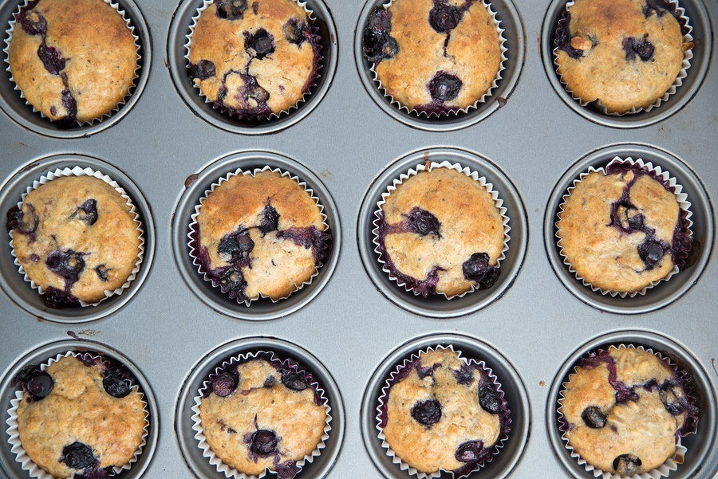

Blueberry Muffins

| Ingredients | Amount |
|---|---|
| Flour | 3 cup |
| Sugar | 1 cup |
| Baking Powder | 1/2 tsp |
| Baking Soda | 1/2 tsp |
| Salt | 1/2 tsp |
| Yogurt | 1 1/2 cup |
| Eggs | 2 (large) |
| Butter | 8 tbs |
| Fresh Blueberries | 1 1/2 cup |
Instructions
- Heat oven to 375 degrees
- Grease a 12 cup muffin tin
- Mix together flour, sugar, baking powder, baking soda, and salt in a large bowl
- In another bowl, whisk together yogurt and eggs
- Fold yogurt mixture into the flour mixture and fold in melted butter and blueberries
- Divide batter evenly among muffin cups and bake for 25 - 30 minutes
- Let muffins cool in pan for 5 minutes and then on a rack for 10 minutes
Rasberry Almond
Add 1/2 tsp almond extract to the yogurt mixture. Spoon 2 tbs of batter into each muffin cup. Spoon 1 tsp rasberry jam into the center of the batter. Fill muffin cups witht he remaining batter.Orange Cranberry
Add 1 tsp grated orange zest to the yogurt mixture and fold 1 1/2 cups chopped cranberries into the finished batter.Lemon Poppy Seed
Add 3 tbs poopy seeds to the flour mixture and 1 tbs grated lemon zest to the yogurt egg mixture. While muffins are baking, heat 1/4 cup sugar and 1/4 cup lemon juice in a small saucepan until the sugar disolves. Brush the syrup over the warm baked muffins.
Don't Like Blueberry?